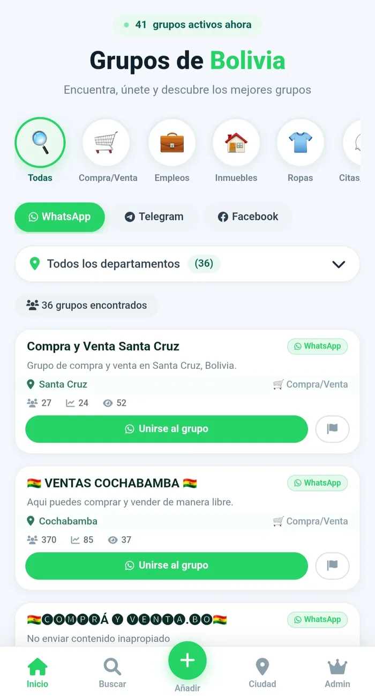
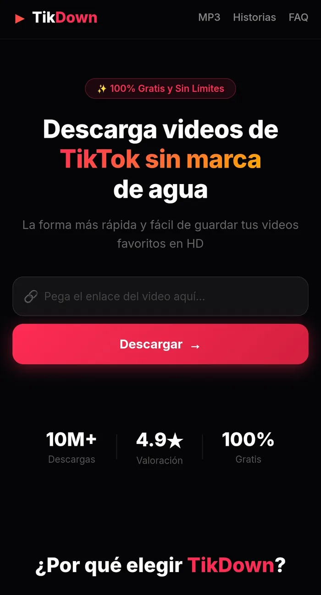
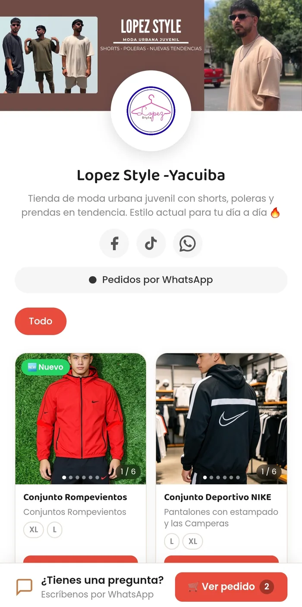
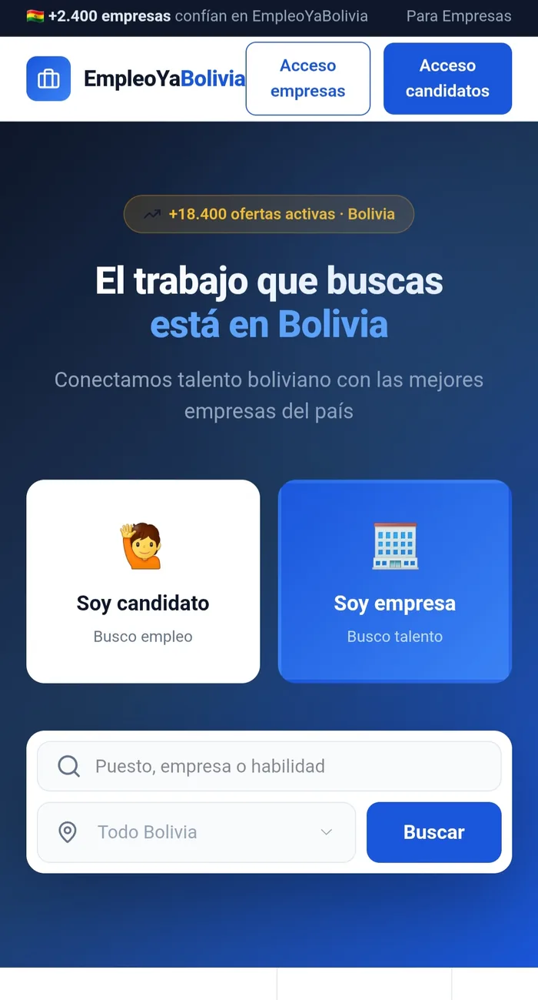
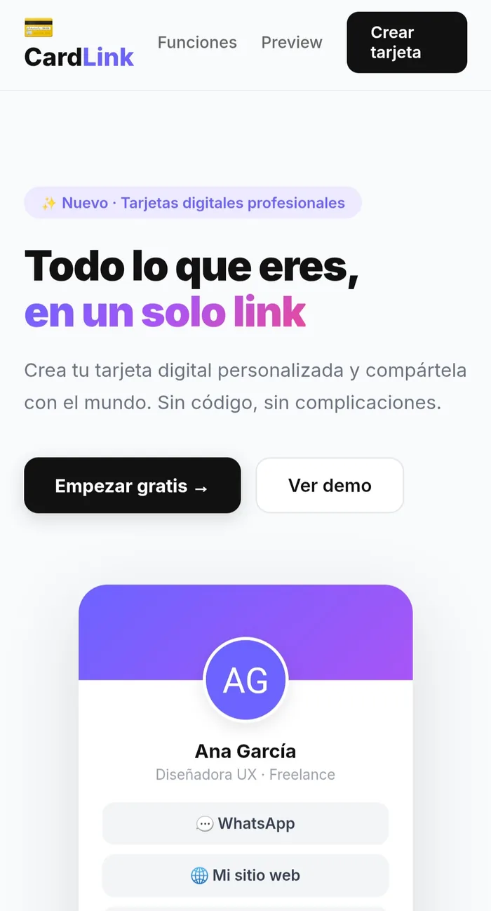

Diseñador y Desarrollador Web apasionado por crear sitios web modernos, funcionales y centrados en la experiencia del usuario. Disfruto aprender nuevas tecnologías y convertir ideas en proyectos reales.
Diseño y desarrollo sitios web modernos, funcionales y enfocados en brindar una buena experiencia al usuario.
Soy estudiante de Ingeniería en Sistemas y apasionado por el diseño y desarrollo web. He aprendido de forma autodidacta creando proyectos reales y explorando nuevas tecnologías para mejorar continuamente mis habilidades.
Mi stack tecnológico y habilidades creativas para desarrollar proyectos web de calidad.
Creación de materiales visuales para eventos, campañas y marcas con Photoshop y Canva.
Sitios web funcionales y atractivos con WordPress, HTML y CSS listos para publicar.
Planificación y evaluación de estrategias digitales para hacer crecer tu presencia online.
Asistencia en la creación y gestión de tiendas en línea con foco en conversión y usabilidad.
Una muestra de mi trabajo — soluciones digitales que combinan diseño y funcionalidad.





Disponible para proyectos freelance y colaboraciones. Hablemos sobre cómo puedo agregar valor a tu negocio o equipo.